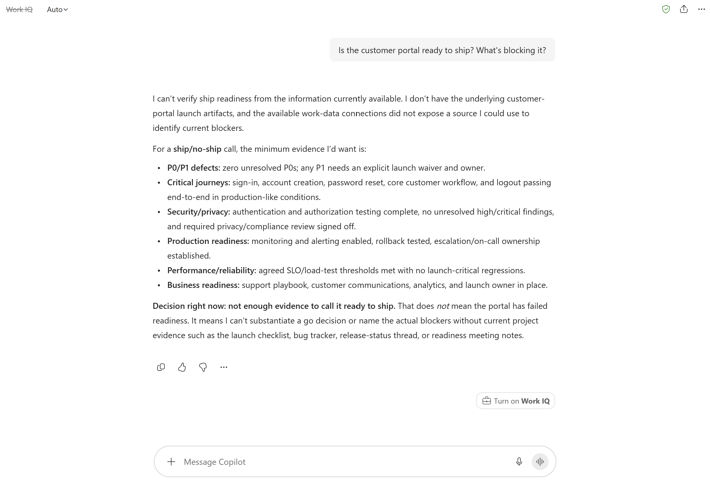
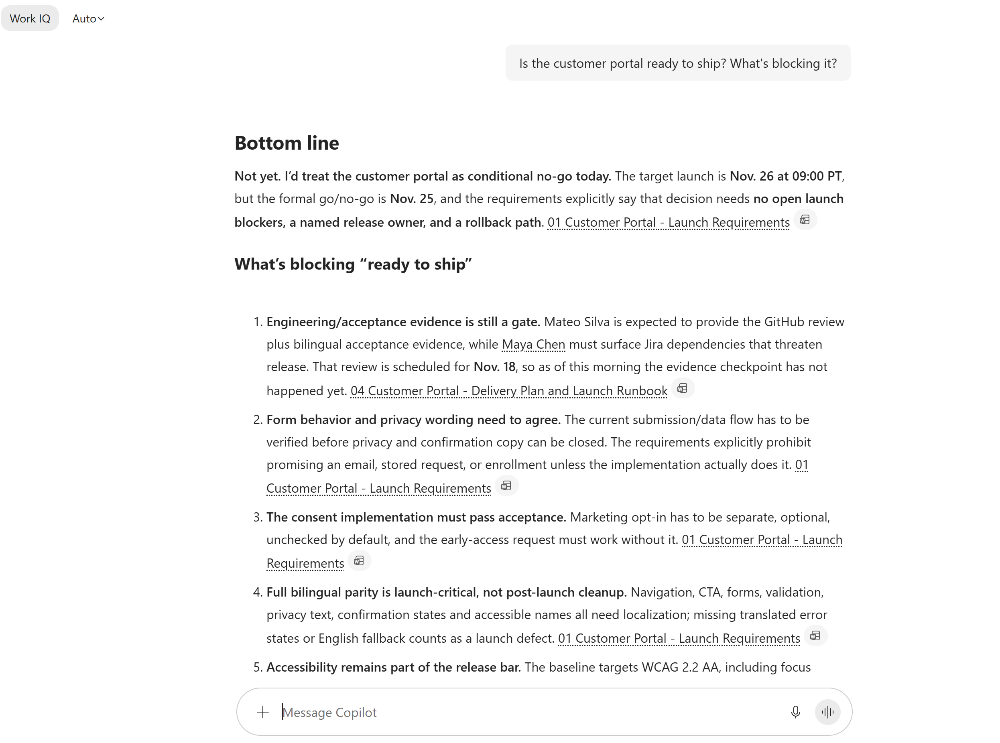
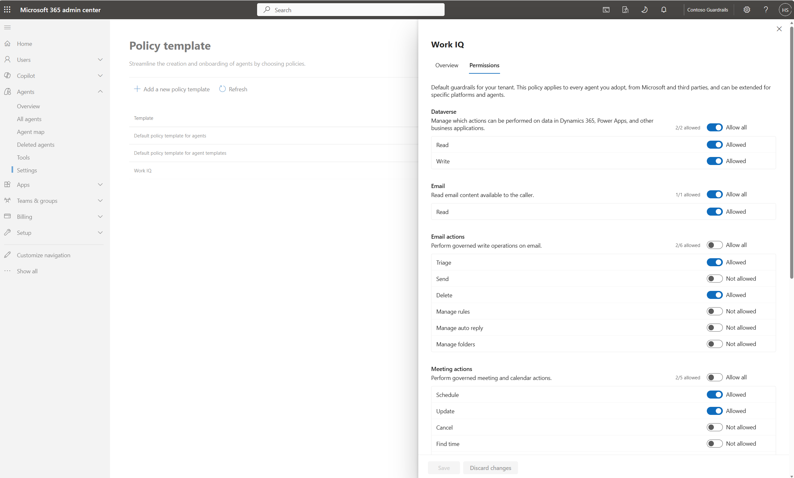
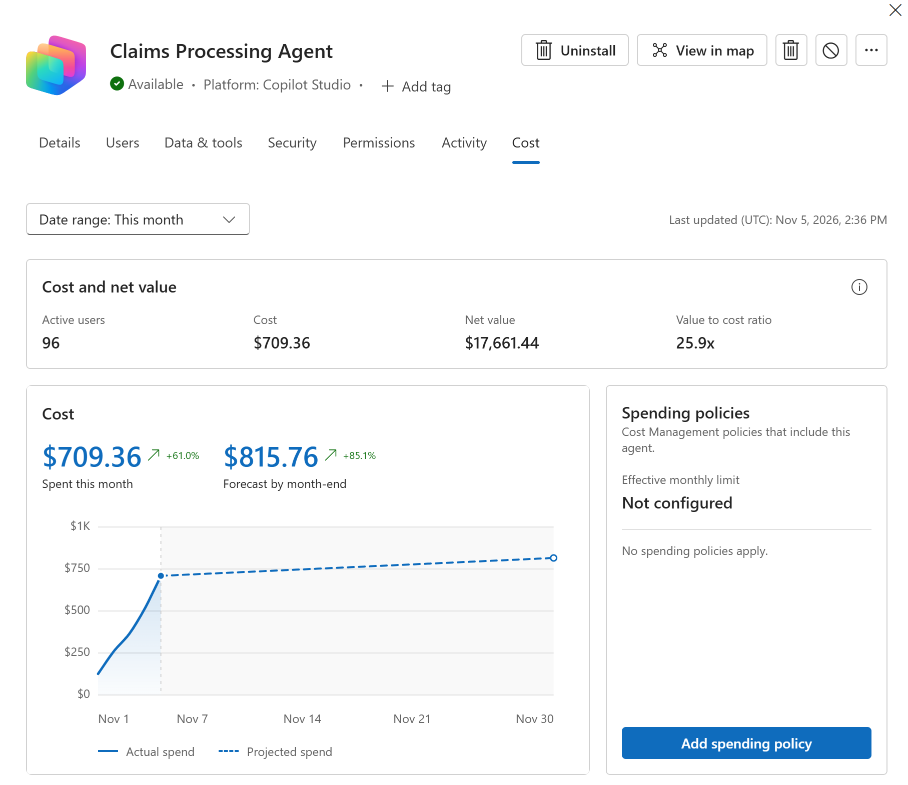

BRK302 第 5 页原图 · 未开 Work IQ
缺乏组织脉络：只能罗列空泛的通用上线准则
模型虽能流畅作答，但因看不见项目运行手册与会议纪要，无法点出任何真实阻塞单或责任人 [1][2]。
企业智能体频频在真实上线节点踩空，根源并非底层大模型缺少推理能力，而是法务在会议里敲定的双语合规要求从未同步进代码仓或工单系统 [1][2]。在 Ignite 2026 专场 BRK302 中，首席产品总监 Tolga Kilicli 与高级产品经理 Manuel Cerrutti 完整拆解了 Work IQ 如何用 13 个稳定工具动词串联企业协作图谱与 300 余个外部连接器，让同模型任务完工量跃升 1.7–3.9 倍、单任务成本下降 40%–74%，并在 Agent 365 双层护栏下跑出 25.9 倍真实净价值 [1][2]。
01 / Context Gap & Architecture
大模型早已能流利总结代码仓库，却回答不出一句最朴素的工程追问：“客户门户下周能按时发版吗？” [1]。在 BRK302 还原的 Fourth Coffee 加拿大站点上线事故中，代码托管在 GitHub，工单追踪在 Jira，两套系统都显示功能开发就绪；唯独法务团队在一次内部会议与聊天频道里拍板的“首发必须支持英法双语”，既没建单也没写进代码 [1][2]。与此同时，两张阻塞上线的未结工单锁在智能体无权访问的外部系统里，而主力研发人员整天停留在本地编辑器中，根本不会切去独立聊天窗口反复交代背景 [1][2]。
要把孤立问答变成可靠代办，智能体必须在模型推理之外补齐三块拼图：**脉络（Context）**负责看清散落在聊天、邮件与业务表里的最新团队决议和协作关系；**行动（Action）**负责跨系统改写记录、起草文档与推进流程；**信任（Trust）**负责把每一次读写死死锁在调用者权限与企业预算护栏之内 [1][2]。下方导览台内嵌了 BRK302 全长 45 分钟官方点播流、原版课件直链与四幕时间轴索引，点击章节标签即可切换查阅 [1][2]：
按演讲时间轴切换四大实战章节，一键内嵌播放微软官方 Medius 点播流或下载 32 页原版课件。
同一套模型与同一句提问，在开关 Work IQ 前后给出了截然相反的上线裁决 [1][2]。未开启 Work IQ 时，智能体只能抛出一份泛泛而谈的六条通用发版核对清单，无法指出任何具体阻塞项；开启 Work IQ 后，它直接调取《01 客户门户上线需求》与《04 交付计划与运行手册》原件，明确给出“有条件暂缓发版（Conditional No-Go）”结论——指出正式发版日为 11 月 26 日上午 9 点（太平洋时间）、准入评审定在 11 月 25 日，并逐条列出双语全链路本地化缺口、隐私勾选框默认未勾选验收以及无障碍标准等五项实证阻断源 [2]：

模型虽能流畅作答，但因看不见项目运行手册与会议纪要，无法点出任何真实阻塞单或责任人 [1][2]。

直接引用两份内部上线文档，点名 Mateo Silva 的双语验收责任、Maya Chen 的依赖排查与隐私文案核对要求 [2]。
02 / 13-Verb Surface & Benchmarks
为什么同样读取企业邮件、文档和工单，直接把传统 Microsoft 365 接口挂给智能体往往既慢又贵 [1]？Tolga Kilicli 在现场披露了对照组实测机制：传统智能体为了找齐散落各处的线索，必须在一堆细碎端点间反复发起搜索、逐页拉取列表、下载长文档并整篇塞进上下文窗口，导致交互轮次与输入词元急剧膨胀 [1]。Work IQ 则在服务端先行完成语义理解与权限过滤，直接向智能体交付高信噪比证据，从而用更少的轮次和词元跑完任务 [1][2]。
支撑这套效率跃迁的核心工程设计，是将接口拆解为**“13 个恒定动词 × 持续生长的名词路径”** [1][2]。无论底层新增多少套业务系统或合作伙伴数据源，模型上下文窗口里永远只需要理解这 13 个内聚工具：retrieve、ask、list_agents、fetch、fetch_blob、create_entity、update_entity、delete_entity、do_action、call_function、search_paths、get_schema 与 listen [2]。新接入的约 60 个 SharePoint 内容与站点管理工具、第一方业务表或外部连接器全部作为路径命名空间动态挂载，彻底消除了“每接十个系统就往提示词里塞几百个新函数定义”的上下文污染，确保今天编写的智能体在未来数据源扩容时零改代码持续生效 [1][2]：
| 组合范式（工具 + 路径） | 请求示例 | 确定性行为与权限边界 |
|---|---|---|
| 证据检索（模型自持推理） | retrieve + strategy=grounding (query=portal language decision) |
只返原句段落、绝不越俎代庖合成答案：按登录用户身份裁剪权限，返回《10月21日法务评审》与《需求文档 §4.2》带源引文，由开发者自选模型掌控最终推理 [1][2] |
| 个人协作图谱读写 | fetch /me/messages/{id} 或 do_action /me/messages/{id}/forward |
在 /me/… 命名空间下读取个人邮件、聊天记录或转发讨论串，自动继承组织邮件与会话合规策略 [1][2] |
| 业务记录系统增改 | update_entity /businessapps/…/records/{id} |
在 /businessapps/… 或 /<provider>/… 路径下统一更新客户关系管理记录、工单状态或跨表实体，无需学习异构接口方言 [1][2] |
| 零轮询事件订阅唤醒 | listen（发现事件 → 注册意图 → 按需唤醒） |
2026 年 12 月 4 日开启公测：告别每秒烧词元的定时轮询，在“缺席会议被指派待办”“临近一对一汇报”或“共享文件未审阅”时携带精准上下文唤醒长时任务并起草 Word/Excel/PPT [1][2] |
03 / Three Connected Demos
为了证明同一套组织脉络能无缝跟进完整研发闭环，Manuel Cerrutti 围绕 Fourth Coffee 加拿大客户门户遗漏法语支持这一真实隐患，现场串联了三场环环相扣的实机演示，横跨业务自助、持续集成流水线与本地代码修复三个工位 [1][2]：
开发者 Mateo 在 Copilot Studio 中新建“发布就绪度智能体（Release Readiness Agent）”，利用已正式商用且默认开启的 Work IQ 连接器联动 Jira、GitHub 与标准化评估技能 [1][3]。当被问及门户上线风险时，智能体从数周前的一段聊天记录里揪出“加拿大首发须支持英法双语”却未入库的高危断层 [1]。更关键的是同源异构权限裁剪：研发经理 Maya 提问同一智能体时，除了看到双语缺口，还会额外看到团队成员 Victor 即将离职的人力补缺预警（Mateo 无权查看该人事信息），随后 Maya 一句话指令该智能体于 10:26 将脱敏后的状态摘要推送至营销经理频道 [1]。
营销团队成员 Tessa 不希望每天追问研发进度，而是希望每次代码变动都能自动转化为营销侧待办 [1][2]。Mateo 配置了 GitHub 智能体工作流：每当仓库发生提交，GitHub Actions 内的智能体先解析代码差异与安全隐患，随即以登录用户身份调用挂载 Work IQ 的聊天智能体，于 10:30 自动向 Tessa 推送结构化通知——明确告知门户新增英法双语改动，提醒营销侧立即核查行动号召按钮（CTA）措辞、语言切换与隐私条款 [1]。现场同步展示了在第三方自动化平台 n8n 中挂载 Work IQ 服务节点，零障碍复刻完全一致的跨系统触发流 [1]。
回到代码修复环节，Mateo 在 Visual Studio Code 的聊天扩展中挂载 Work IQ 服务与配套插件，直接向编辑器发问：“当前代码是否符合团队最新工作决议？” [1][2]。编辑器跨出代码仓拉取相关聊天讨论，不仅指出未启用法语，还点出行动号召文案需同步微调，并自动生成双语切换代码 [1]。等待编译期间，Manuel 切换至终端内的 Claude Code，同样通过协议挂载 Work IQ，先用 list_agents 列出租户内已安装的智能体，再直接跨平台唤醒第一步在 Copilot Studio 里创建的“发布就绪度智能体”查询最新进展，最终刷新浏览器验证英法双语门户成功上线 [1][2]。
04 / Ecosystem, Trust & FinOps
个人工作脉络如何平滑扩展为全公司共享的数字生产力 [1]？BRK302 给出的答案是 Microsoft 插件注册表（Plugin Registry） 与跨生态开放接入 [1][2]。团队将验证过的业务技能（Skills）、底层系统连接工具（Tools）与编排智能体（Agents）一次性打包为标准插件并交由 Agent 365 统一纳管，即可在员工偏好的任意工作台复用——目前 Work IQ 已正式上架 ChatGPT 插件目录并原生内置于 Copilot，针对 Claude（Anthropic） 与 Gemini Business 的官方接入也即将推出 [1][2]。在行业伙伴侧，Adobe 正将 Work IQ 融入客户体验协同助手以打通客户内容与内部工作脉络，Atlassian 将其接入 Rovo Studio 串联研发工作流，能源科技巨头 SLB 则把地下勘探专业数据与 Work IQ 组织上下文结合以加速科研攻关；反向通道上，管理员只需一次配置 300 余款官方连接器，全组织智能体即可按既有权限安全访问客户关系、工单、人力与财务系统 [1][2]。
在 Microsoft 365 管理中心的 Work IQ 策略模板中，管理员统一设定所有第一方与第三方智能体的能力天花板——例如开放业务表读写（2/2 允许）与邮件读取，但在 6 项邮件写操作中仅放行“分拣（Triage）”与“删除”，明确封禁“代表用户发送邮件”、篡改转发规则与自动回复 [1][2]。
单个智能体（如销售管线准备助手）仅被授予比租户更窄的只读权限，一切创建、更新、删除与动作执行均被硬性阻断（“策略未列出的能力一律禁止”）[2]。同时，由于智能体会广泛读取非自己撰写的外部邮件与文档，Work IQ 在内容进入模型前会自动剥离暗藏的提示词注入指令，确保智能体只拿到干净事实 [1]。
当成百上千个智能体投入生产后，IT 与财务部门最关心两个问题：钱花在了哪里？回报是否值回票价 [1][2]？在管理中心账单看板上，管理员不仅能按部门（如工程部 250,000 点数、法务部 30,000 点数）、具体服务（如协同画布与 Work IQ 接口）及个人透视预付费与按量计费消耗、设置月度硬上限并将账单映射回企业既有财务分摊体系（支持一键导出至 Fabric IQ 自定义报表），还能把实时消耗与业务产出并排对比 [1][2]。下方两幅提取自 BRK302 第 24 页与第 26 页原版课件的高清控制台实拍，完整展示了双层权限模板与单智能体 25.9 倍投资回报核算界面 [2]：

逐项管控业务表读写、邮件分拣/代发（2/6 允许）与日程排期/取消（2/5 允许），每次调用强制鉴权 [1][2]。

96 名活跃用户当月消耗 709.36 美元（月末预测 815.76 美元），创造高达 17,661.44 美元净价值，辅助管理员精准保优汰劣 [1][2]。
对于准备动手落地的架构师与开发者，两位讲者在收官环节给出了明确的起步路线：“先管住访问边界与成本上限，再挑一条高频工作流切入” [1][2]。团队可直接拉取官方开源仓库获取示例配置，结合点数估算器测算月度预算 [4][5]。需要延伸探索业务系统融合与安全治理的读者，可继续查阅同系列专场 BRK299 与 BRK296；若重点关注主动事件监听与动手实操，则可跟进剧场分享 THR874 与实验课 LAB671 [2]。
05 / References: Official Primary Sources & Engineering Guides
https://medius.microsoft.com/Embed/video-nc/e241973d-6bc2-4333-8aa4-d78d94c37b2b）与完整双语演讲实录（2026-11-20）
retrieve/listen 契约与 Agent 365 实拍（2026-11-20）